Week 06: Electronic Input Devices
Capacitive Sensors
I was curious about measuring overlap of two parallel capacitive plates to measure positioning. I trimmed the capacitive sensors in our kits so they would be an equal size of 2 inches by 1.5 inches. And sought to measure the percentage of area overlap.
I set up my circuit based on our in-class tutorial and used a modified version of Rob’s code for tx_rx sensing with a rolling average. I increased the number of samples to 5000 to further reduce noise and make it easier to manage the data. I also set my circuit up the way we discussed in class, using 2 resistors to help reduce noise the data as well.
int read_high;
int read_low;
int diff;
long int sum;
int N_samples = 5000; //Number of samples to take. Larger number slows it down, but reduces scatter.
int analog_pin = A0;
int tx_pin = 4;
void setup() {
pinMode(4,OUTPUT); //Pin 4 provides the voltage step
Serial.begin(115200);
}
void loop() {
sum = 0;
for (int i = 0; i < N_samples; i++){
digitalWrite(tx_pin,HIGH); //Step the voltage high on conductor 1.
read_high = analogRead(analog_pin); //Measure response of conductor 2.
delayMicroseconds(100); //Delay to reach steady state.
digitalWrite(tx_pin,LOW); //Step the voltage to zero on conductor 1.
read_low = analogRead(analog_pin); //Measure response of conductor 2.
diff = read_high - read_low; //desired answer is the difference between high and low.
sum += diff; //Sums up N_samples of these measurements.
}
Serial.println(sum);
//delay(100);
}
I used my quilting ruler as a measuring guide. I taped the first sensor pad to my quilting mat, and then placed my quilting ruler over the sensor. I then taped my second sensor to a clear plastic picture frame so that I could slide the second sensor over the first without changing the force or permativity. I slide the top sensor over the bottom sensor in 1/8 inch increments, starting with the sensors adjacent but not overlapping and sliding the top sensor from left to right until they were adjacent but not overlapping again.
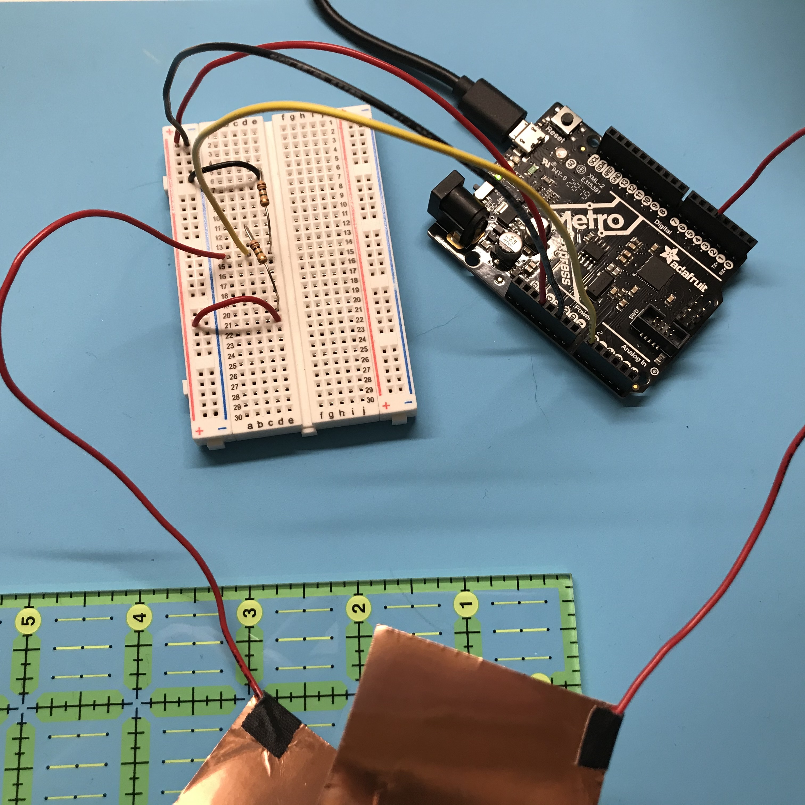
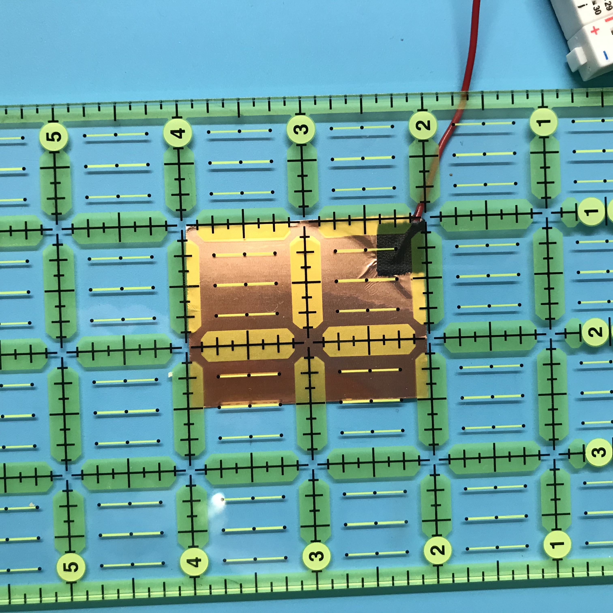
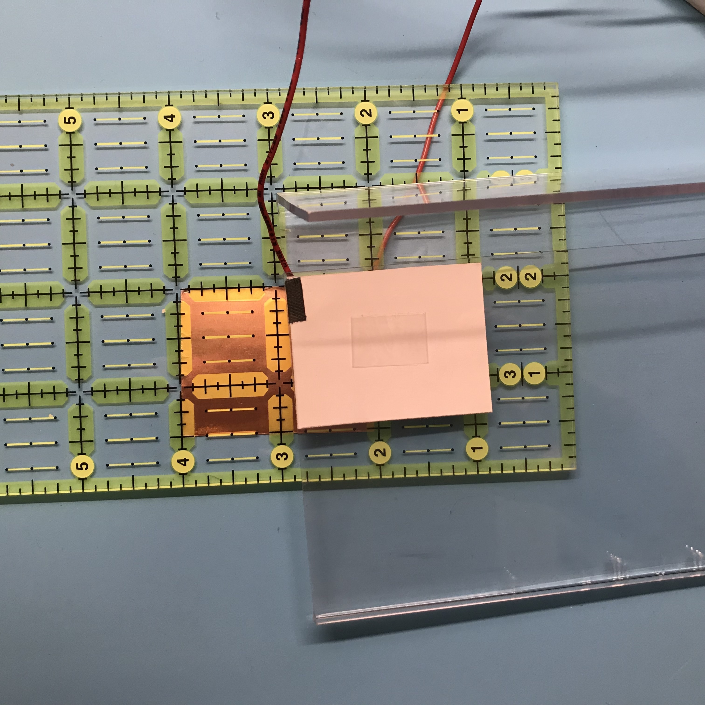
To measure the output, I let the serial monitor run and then positioned my sensor. Holding the sensor in place with one hand, I then cleared the output of the serial monitor with the other and waited for 10 readings to appear. I then copied those first ten readings into a text file with the position of the sensor. I averaged these ten readings for each position of the sensor to get an output value. To make the output values even easier to read, I also divided the values by 1000. I also measured the sensor at two extremes, with the top sensor to the left of the bottom sensor separated by a 1 inch gap and the top sensor to the right of the bottom sensor separated by a 1 inch gap. These two "gap" positions appear as the first and last data point. The photo series below shows the path of the top sensor across the bottom sensor from left to right.
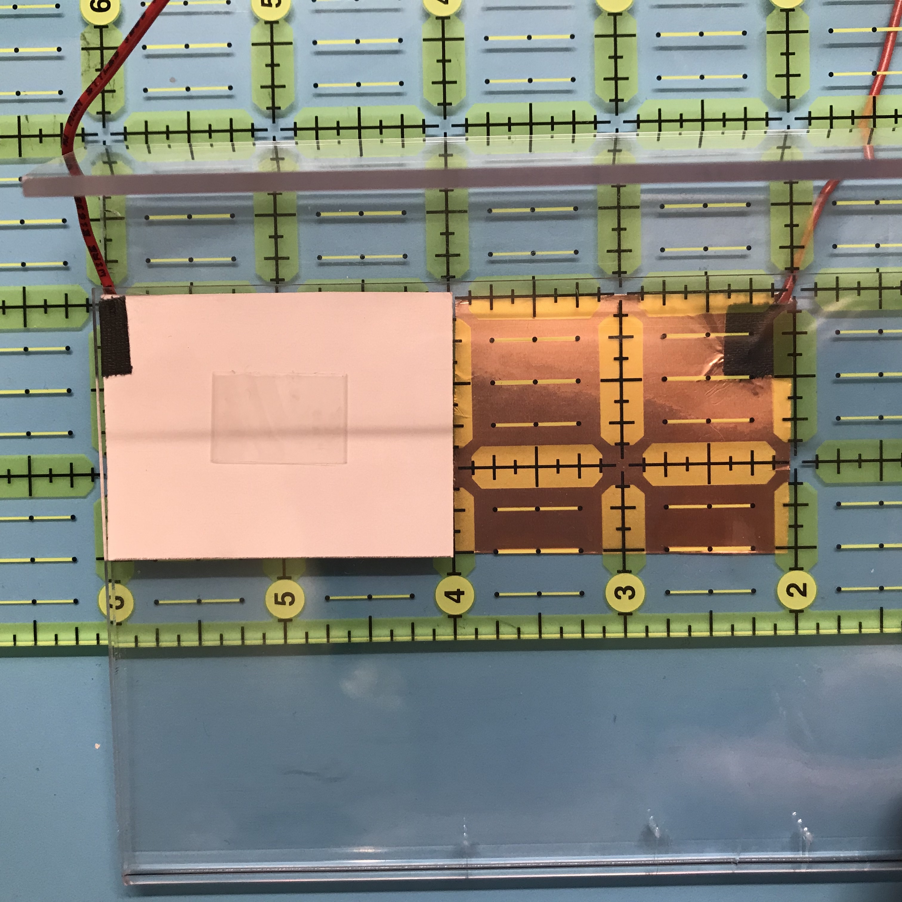
Position 00: capacitive plates are adjacent but not overlapping
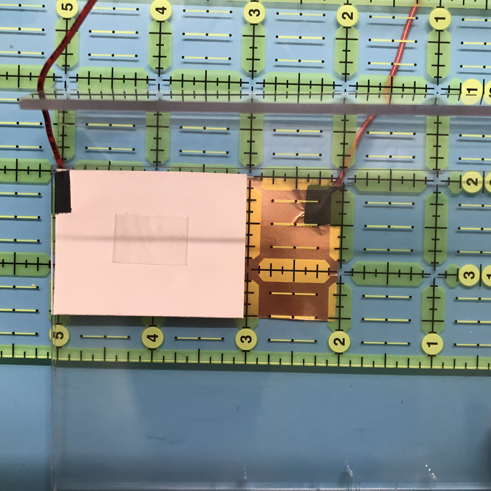
Position 09: capacitive plates overlap by 50%
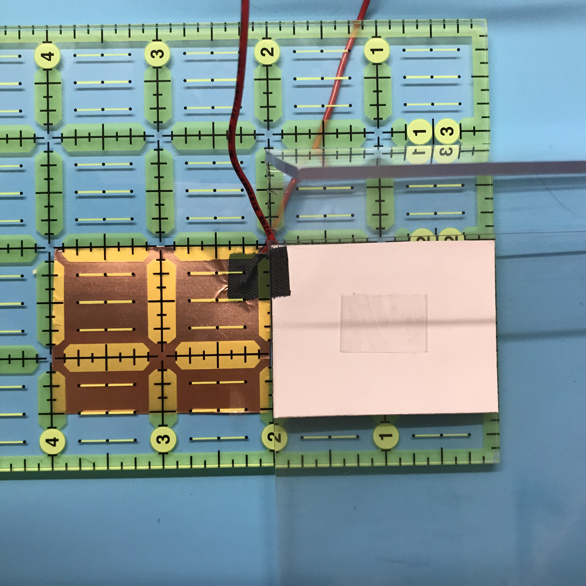
Position 33: Capacitive plates are adjacent but not overlapping
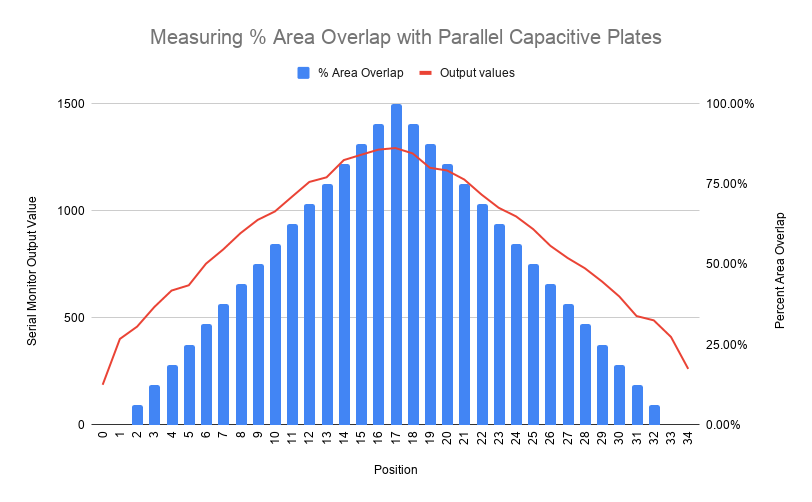
Calibrating an Accelerometer
I wanted to play around with the accelerometer in our kit because I anticipate this will be an important sensor for my final project. I followed this tutorial on the Arduino site (linked to our course website) for the Adafruit LIS3HD accelerometer. They gave instructions for using the hardware 12C wiring or a software SPI wiring (for any microcontroller). I set up my accelerometer and microcontroller using the 12C hardware method, downloaded the appropriate libraries and loaded the acceldemo example. Since I was using 12C, I commented off the lines relating to software SPI. Also, the adafruit guide said that 5V was OK and so I followed their guide and hooked up to 5V….
I read a bit more about accelerometers using SparkFun’s tutorials on accelerometer basics and on SparkFun's LIS3DH.
The Arduino tutorial code is nice because it explains each of the components of the data read. This particular program produces both raw and normalized data. Nevertheless, I was a little perplexed about the actual calibration, as the accelerometer itself already seemed to have an internal calibration (the nature of the sensor itself). So after some googling, I decided I would try to measure angle rotation using the lazy susan that I “borrowed” from my parents last week. I turned off the raw data serial monitor print in the code and changed the delay to 5000 ms so that I would just have fewer lines of data, and would be able to capture it easier.
}
void loop() {
// lis.read(); // get X Y and Z data at once
// Then print out the raw data
//Serial.print("X: "); Serial.print(lis.x);
// Serial.print(" \tY: "); Serial.print(lis.y);
// Serial.print(" \tZ: "); Serial.print(lis.z);
/* Or....get a new sensor event, normalized */
sensors_event_t event;
lis.getEvent(&event);
/* Display the results (acceleration is measured in m/s^2) */
Serial.print("\t\tX: "); Serial.print(event.acceleration.x);
Serial.print(" \tY: "); Serial.print(event.acceleration.y);
Serial.print(" \tZ: "); Serial.print(event.acceleration.z);
Serial.println(" m/s^2 ");
Serial.println();
delay(5000);
}
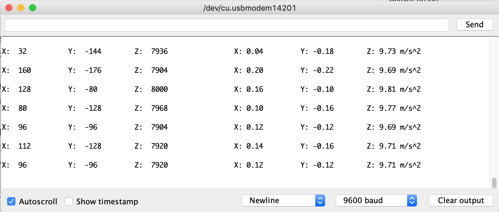
I made a little contraption to indicate degrees of movement in a circle using the lazy susan and a paper guide. I moved the accelerometer in 45 degree intervals. Is this the most interesting use of an accelerometer? No, but it did help me to figure out what was going on with each of the data points in space.
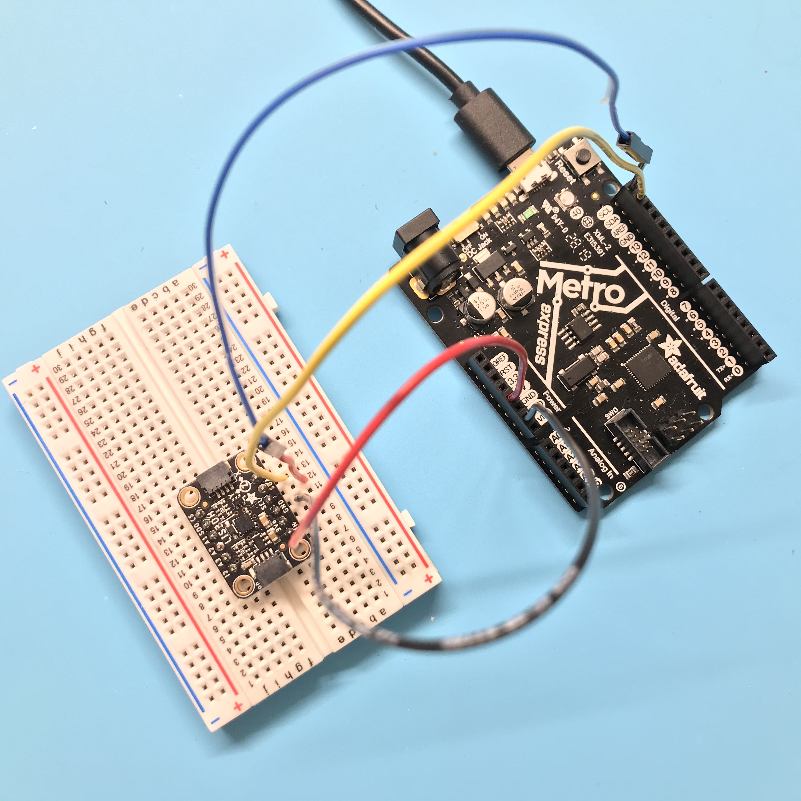
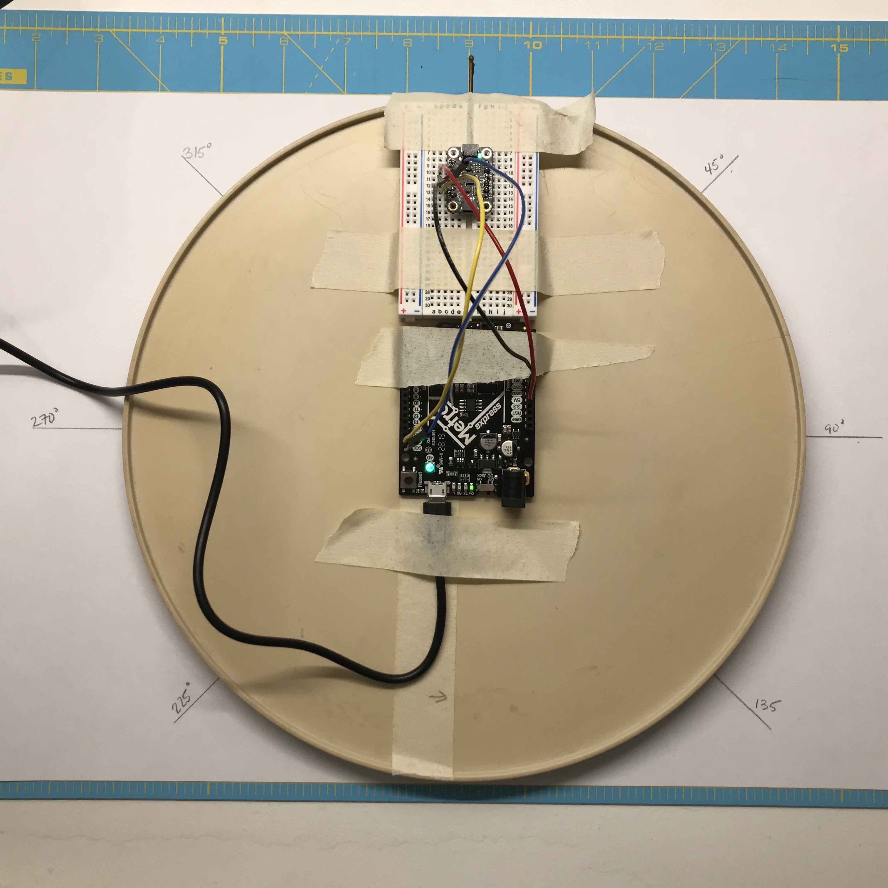
The Z value should have mostly stayed the same since I wasn’t changing the height of the accelerometer, so the changes in Z I have attributed to noise and/or the fact that my desk tabletop has a slight slant to it (so the measurements between 90 and 270 will have the Z axis shifted downward compared to the measurements from 270 to 90). For the X and Y values, I expected them to produce mirroring values as they moved around the circle.
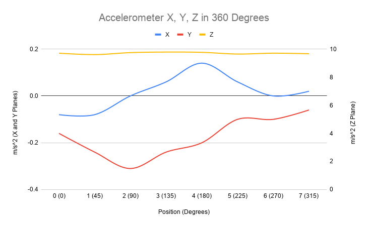